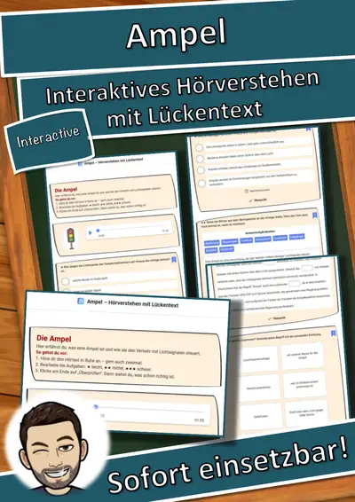

Lesespur: Ampelsteuerung: Zustände und Automaten – Lesespurgeschichte mit Rätseln (Klasse 7)
Ampelsteuerung – Zustände und Automaten – Lesespurgeschichte Informatik (Klasse 7)Schick deine Klasse auf eine Lesespur durch eine Verkehrsrechnerzentrale! Nora und Vincent aus der 7a verbringen dort einen Projekttag. Die Verkehrsingenieurin Frau Albayrak zeigt ihnen, warum eine Ampel eigentlich ein Automat mit festen Regeln ist: Im Leitstand sehen sie alle Ampeln der Stadt, an der Modellkreuzung die vier Zustände einer Autoampel und an der Zustandstafel das Zustandsdiagramm mit Zuständen, Übergängen und Startzustand. Am Schaltschrank erfahren sie, wie ein Zeitgeber die Wechsel auslöst, an der Fußgängerampel, dass ein Tastendruck ein Ereignis ist, und am Sensorfeld, wie eine Induktionsschleife wartende Autos erkennt. Am Sicherheitsrechner lernen sie verbotene Zustände kennen, und auf der Aussichtsterrasse entdecken sie die grüne Welle und weitere Automaten im Alltag. Noras Plüsch-Verkehrshütchen Pylo ist immer dabei. Am Ende jedes Abschnitts verrät ein Hinweis den nächsten Ort auf dem Plan – nur wer genau liest, findet den Weg und sammelt alle geheimen Buchstaben zum Lösungswort.
Die perfekte Lesespur für INFORMATIK in der 7. Klasse – ideal als Einstieg in das Modellieren mit Zuständen und Automaten, für Vertretungsstunden, Projekttage und fächerübergreifend mit Deutsch und Mathematik: Sie verbindet sinnentnehmendes Lesen mit den Grundlagen von Zustandsdiagrammen und kleinen Sachrechnungen mit Zeiten und Prozenten. Das Material ist SOFORT EINSETZBAR, funktioniert ganz ohne Computer und ist in DREI DIFFERENZIERUNGSSTUFEN (leicht ★ / mittel ★★ / schwer ★★★) angelegt.WICHTIG: Das komplette Material ist sowohl in FARBE als auch in SCHWARZ-WEISS enthalten – ideal zum Sparen von Druckkosten.DAS IST ENTHALTEN
- Lesespurgeschichte in 3 Niveaus (leicht, mittel, schwer)
- farbiger Plan der Verkehrsrechnerzentrale als Suchkarte
- Hörverstehen mit QR-Code zur MP3 (selbstständiges Hören mit Kopfhörern)
- vier Aufträge auf dem Weg: eine Zuordnung, ein Quiz, eine Rechenaufgabe und ein Steckbrief
- Rätselseite (Wörter-Suchsel + Fragen zu Ampeln und Automaten)
- Ausmalbild zum Thema (Straßenkreuzung mit Ampeln)
- ausführliches Lösungsblatt für die Lehrkraft
- alles zusätzlich als komplette Schwarz-Weiß-VarianteSO GEHT DIE LESESPURDie Jugendlichen lesen ab START, finden im Text den nächsten Ort, suchen ihn auf dem Plan und lesen bei dieser Station weiter. An jeder richtigen Station gibt es einen Buchstaben. Eingeplante Sackgassen (Garderobe, Feuerlöscher, Wasserspender, Laterne) sind keine Stationen und dienen der Selbstkontrolle. Am Ende werden die gesammelten Buchstaben umgestellt und ergeben ein geheimes Lösungswort. (Die Lösungen sind selbstverständlich nur im Lösungsblatt für die Lehrkraft enthalten.)INHALTLICHER SCHWERPUNKTAmpel als endlicher Automat, Zustände Rot, Rot-Gelb, Grün und Gelb, genau ein aktiver Zustand, Zustandsdiagramm mit Zuständen, Übergängen und Startzustand, Zeitgeber, Ereignisse als Eingabe (Tastendruck, Sensor), Induktionsschleife, verbotene Zustände und Sicherheitsabschaltung, grüne Welle, Automaten im Alltag.ABGEDECKTER LEHRPLAN (Klasse 7, Informatik)
- Informatik (LehrplanPLUS Bayern) – Jahrgangsstufe 7: Information und ihre Darstellung, Modellieren – Zustände, Übergänge und Ereignisse beschreiben, Abläufe als Automaten darstellen, Steuern mit Sensoren.
- Mathematik – Jahrgangsstufe 7: Sachrechnen mit Zeiten, Prozentrechnung.
- Deutsch – Lesen: Sachtexte sinnentnehmend lesen; Zuhören: einem Hörtext folgen (Hörverstehen mit MP3).Geeignet für Freiarbeit, Stationenlernen, Vertretungsstunden, Wochenplan, Projekttage und als Vorbereitung auf das Programmieren einer eigenen Ampelsteuerung. Klassenstufe 7.
Ähnliche Materialien

Automat Lückentext mit Wortspeicher Hörverstehen und Suchsel

Gas Lückentext mit Wortspeicher Hörverstehen und Suchsel

Vincent van Gogh Lückentext mit Wortspeicher Hörverstehen und Suchsel

Ampel – Hörverstehen mit Lückentext (interaktiv)

Ampel Lückentext mit Wortspeicher Hörverstehen und Suchsel

Materialpaket Lesespurgeschichten Informatik Klasse 7: 8 Lesespuren mit Rätselaufgaben, dreifach differenziert

Lesespur: Vincent van Gogh: Farbe und Pinselstrich – Lesespurgeschichte mit Rätseln (Klasse 8)